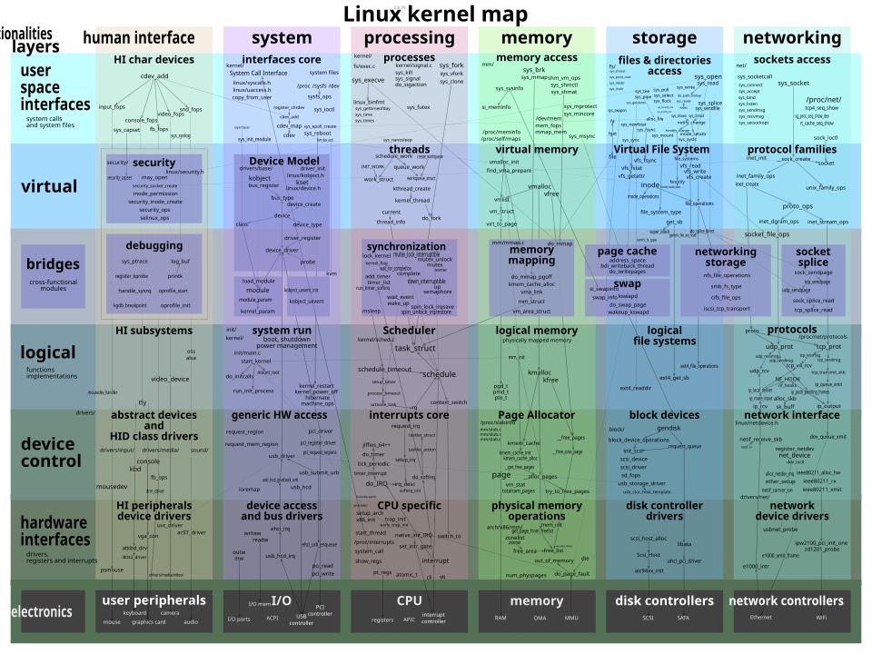
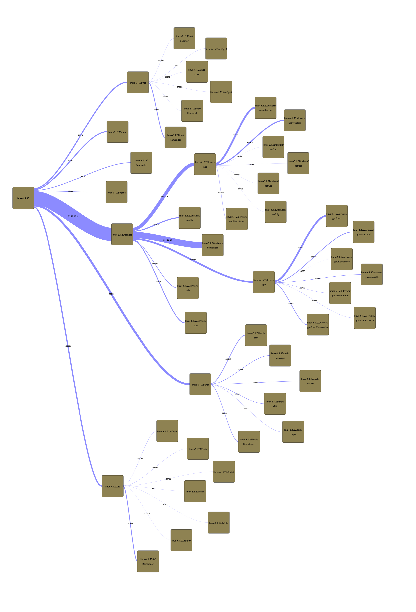

Linux Architecture Diagrams¶
Bird’s eye slice of the kernel:

Networking Stack¶

Concepts:
NAPI (New API): poll packets from the NIC in bulk so that it does not interrupt the CPU too much
Netlink: we use this to communicate with the kernel and configure the network stack
TUN: L3 virtual tunnel
TAP: L2 virtual tap
veth: virtual Ethernet devices. veth devices are always created in interconnected pairs so that packets transmitted on one device in the pair are immediately received on the other device. A particularly interesting use case is to place one end of a veth pair in one network namespace and the other end in another network namespace, thus allowing communi‐ cation between network namespaces. See veth(4).
Future developments:
netkit: eBPF-programmable network device
Storage Stack¶

To manage read and writes to the storage device, the Linux kernel uses the bio structure which connects the filesystem to a particular storage device.
In order to not issue many commands to the storage device, the bio manages a page cache. This is a copy-on-write cache which gets checked before accessing a page. If data gets written to a page, the cache gets dirty, and it can be flushed to the device.
Storage Performance Development Kit: fast and modern API to interact with NVMe devices. It depends on SPDK for network path.
Rendering Stack¶
TODO: I still need to do a deep down here. Here is my understanding after working with graphics in userspace.

HPC¶
HPC Linux is very different than Embedded Linux or Desktop Linux or even Datacenter Linux. The main problem is performance, we want to bypass the kernel, DMA everything and not use locks. We have special hardware for HPC (e.g. infiniband) and standards to solve highly-specific HPC problems.
OpenBMC: implementation of baseboard management controllers (BMC) firmware stack, which controls a CPU in the context of a dataceter / HPC cluster.
OpenHPC: a Linux distribution and set of tools for HPC.
OpenUCX: set of abstractions and primitives for high performance communication, using hardware offload like RDMA, GPUs etc.
Open Programmable Infrastructure (OPI): standardization effort for DPU/IPU-based systems (network, storage and security offload).
Networking:
Ultra Ethernet Consortium (UEC) Specification 1.0: open standard to compete with NVIDIA’s infiniband with a solution based on ethernet.
libfabric: userspace library used by MPI, PyTorch and similar frameworks that manage HPC networking and compute.
Storage:
NVMe 2.0: modern specification to access non-volatile memory, supporting NVMe-over-fabric (NVME-of) for HPC.
Sankey diagram¶
Lines of code per area:
